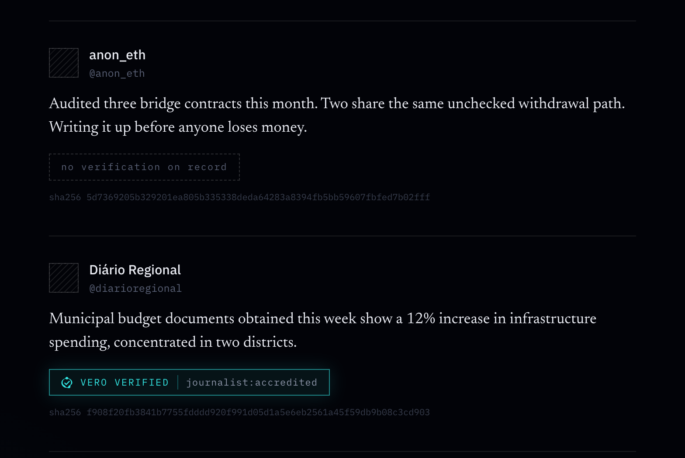

Midnight Buildathon · Wave 1
Vero
Credibility you can prove.
A verifiable credibility layer for online publishing,
built on Midnight.
The problem
Publishing online is easy.
Proving credibility is hard.
- A post can come from a journalist, doctor, accountant, engineer, news outlet — or anyone.
- Readers have no portable way to verify what a source can legitimately claim about itself.
- Trust signals are fragmented: platform badges, screenshots, reputation, manual research.
Vero focuses on one narrower problem:
making source credibility provable.
The solution
From "an authority says so"
to "a proof says so."
Source holds a credential (journalist, professional, organisation)
Compact circuit proves the credential is in the issuer registry, and unexpired
Source discloses only what it chooses
Reader sees a cryptographically verified signal
Identity and credibility are separate dimensions.
Why Midnight
Why Midnight?
- Selective disclosure — prove "this publisher is credentialed" without exposing the credential
- Compact — ZK circuit complexity abstracted into TypeScript-like code (matters for design-led teams)
- Dual-ledger model — private witness data stays local, only verified outcome is anchored publicly
This is the exact primitive the problem needs.
Demo
Verified badge, on-chain.

- Registry membership proven — without revealing which credential. Expiry enforced on-chain.
- Local Midnight devnet · block
5995
Roadmap
Roadmap
Aug 27 – Sep 16
- Concept, personas, competitive landscape
- Local dev stack operational
- Compact contract + end-to-end proof flow
- Merkle issuer registry + expiry enforcement
- Reader view — badge from live ledger state
- Demo video
Sep – Oct
- Wallet bridge — prove from the browser (DApp Connector ↔ midnight-js)
- Multiple registrars and issuer governance
- Credential revocation and public-network deployment
Oct – Nov
- Multiple credential types
- Verification policies
- Broader demo surface
Future
- Portable verification across websites and social feeds
- Browser integrations, APIs
Adoption
Two problems,
not one.
Who displays it. Web3-native publishing first — Mirror, Farcaster, Lens already assume a wallet and already publish under pseudonyms. Then individual publications, then the platforms.
Who issues it. Journalists' associations, medical councils, professional orders. They already decide who is accredited; Vero asks them to publish a judgement they already make.
- Why before the ecosystem exists: a credentialed source who cannot safely publish under their own name wants this with or without a platform — and generated content made "a credentialed human stands behind this" a signal no checkmark can give.
The destination is one registrar per issuer — whoever grants a credential is the only one who can say whether it still holds.
Team
Team
Rafaela Costa
Strategic UX/UI designer & product builder
Vero is a trust-signal design problem as much as a cryptography one — what a reader can understand at a glance decides whether any of the proof underneath matters. That is why it is built design-first.
Compact implementation written with AI-assisted tooling (Midnight Expert, Claude Code) and guidance from the Midnight Discord — which is what let a design-led author work at the contract level rather than around it.
Built for the Midnight Buildathon — Wave 1.